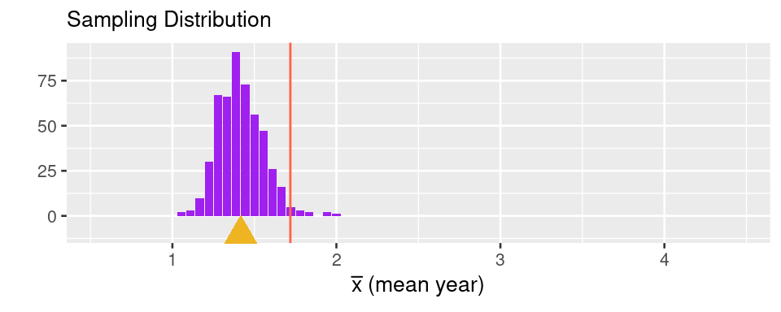
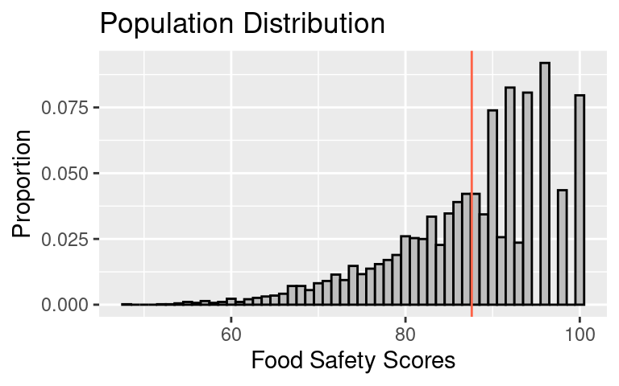
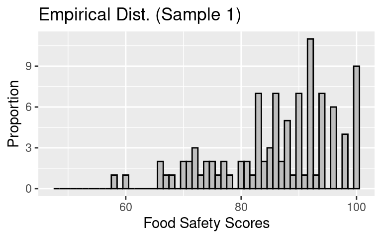
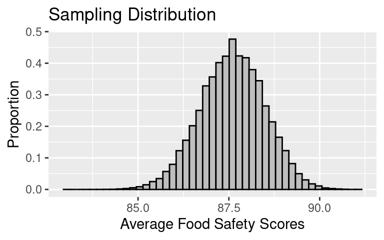
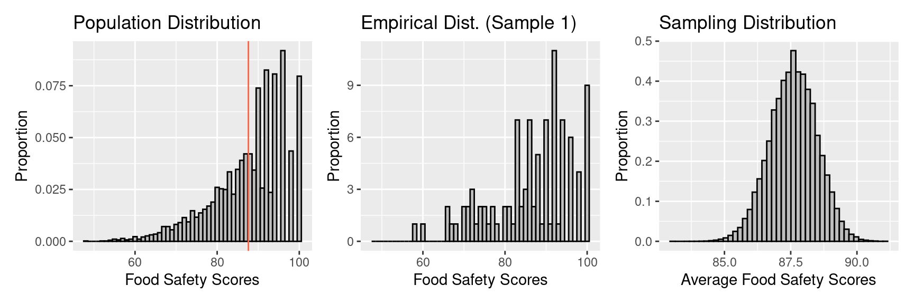
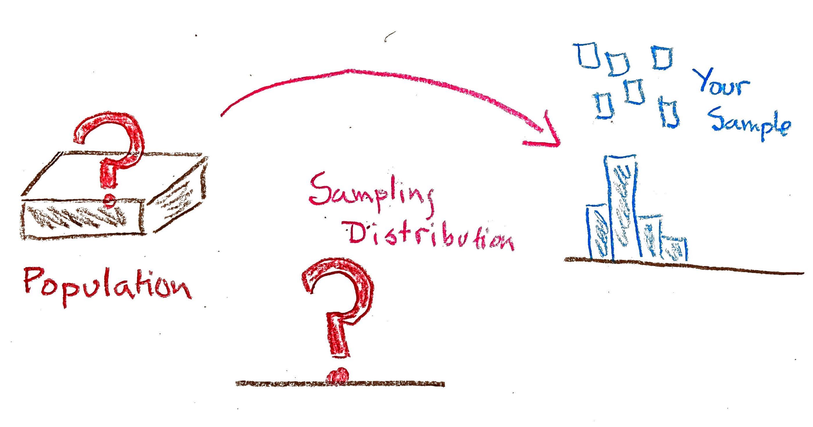
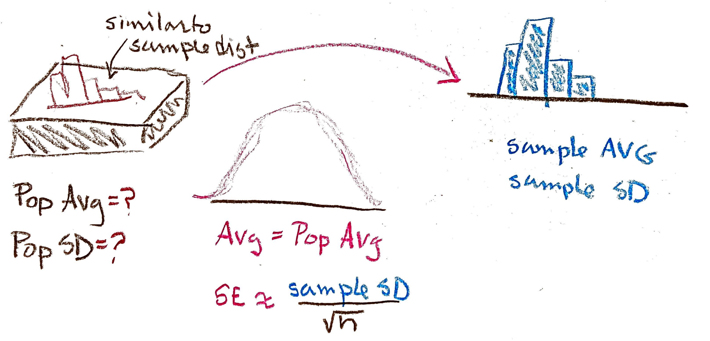
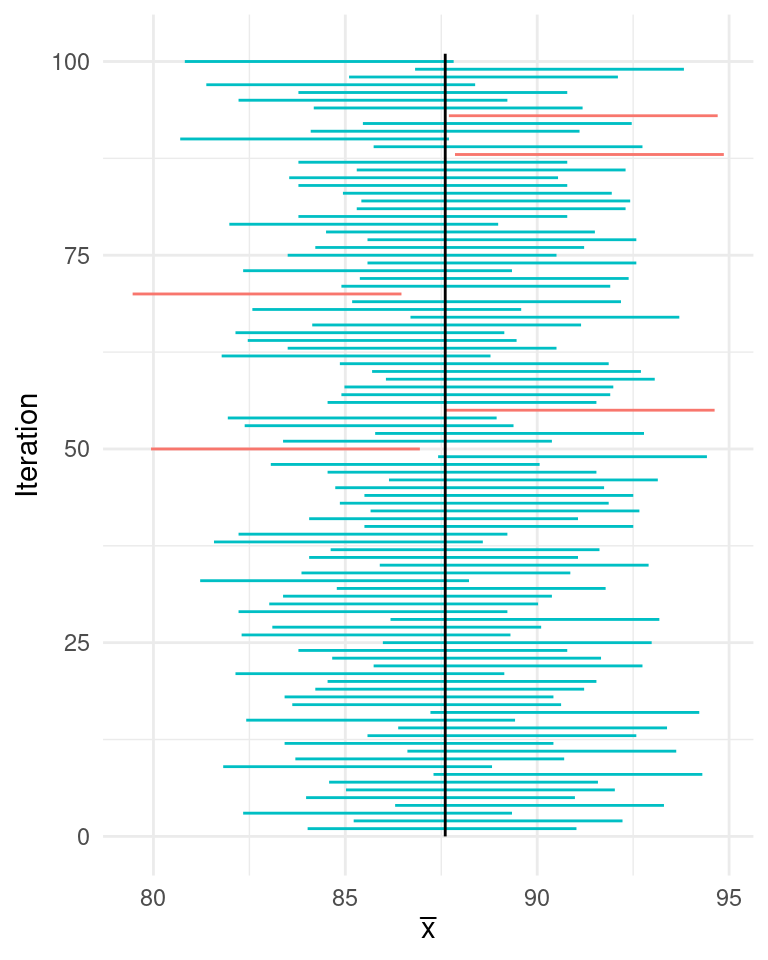
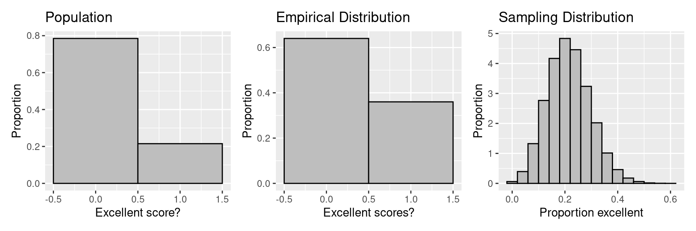

Confidence Intervals
Quantifying the sampling variability of a statistic.
The process of generalizing from a statistic of a sample to a parameter of a population is known as statistical inference. The parameter of interest could be a mean, median, proportion, correlation coefficient, the coefficient of a linear model . . . the list goes on. In the scenario that unfolded in Pimentel Hall, the parameter was the mean year of the 527 students in the class. The process of estimating that parameter by calculating the sample mean of the 18 students who decided to sit in the front row that day induces a sampling distribution.
This sampling distribution captures the two sources of error that creep in while generalizing. The horizontal offset from the true population parameter (the red line) to the mean of the sampling distribution (the gold triangle) represents the bias. The spread of the sampling distribution represents the variation. In these lecture notes you’ll learn how to quantify sampling variability using two common tools.
- Standard Error (SE)
- The standard deviation of the sampling distribution of a statistic.
- Confidence Interval
- An interval of two values that represent lower and upper bounds on the statistic that captures most of the sampling distribution.
To focus on the variation, let’s introduce a second example, one in which we will not need to worry about bias.
A Simple Random Sample
Restaurants in San Francisco
Every year, the city of San Francisco’s health department visits all the restaurants in the city and inspects them for food safety. Each restaurant is given an inspection score; these range from 100 (perfectly clean) to 48 (serious potential for contamination). We have these scores from 2016. Let’s build up to the sampling distribution bit by bit.
The Population Distribution
Our population consists of the restaurants in San Francisco. Since the data are published online for all restaurants, we have a census1 of scores for every restaurant in the city.

The population distribution is skewed left with a long left tail. The highest possible score is 100. It appears that even scores are more popular than odd scores for scores in the 90s; in fact there are no scores of 99, 97, and 95.
We can calculate two parameters of this population:
Population parameters, like the parameters of probability distributions, are usually given a Greek letter. The population mean is \(\mu\), said “myoo”, and the population standard deviation is \(\sigma\), said “sigma”.
- The population mean, \(\mu\), is 87.6.
- The population SD, \(\sigma\), is 8.9.
The Empirical Distribution
Although we have data on all of the restaurants in the city, imagine that you’re an inspector who has visited a simple random sample of 100 restaurants. That is, you draw 100 times without replacement from the population, with each unit equally likely to be selected. This leads to a representative sample that will have no selection bias.
The distribution of this sample (an empirical distribution) looks like:

The sample statistics here are:
While parameters are symbolized with Greek letters, statistics are usually symbolized with Latin letters.
- The sample mean, \(\bar{x}\), is 86.27.
- The sample SD, \(s\), is 9.9.
Observe that the empirical distribution resembles the population distribution because we are using a sampling method without with selection bias. It’s not a perfect match but the shape is similar. The sample average (\(\bar{x}\)) and the sample SD (\(s\)) are also close to but not the same as the population average (\(\mu\)) and SD (\(\sigma\)).
The Sampling Distribution
If you compared your sample to that of another inspector who visited 100 restaurants, their sample would not be identical to yours, but it would still resemble the population distribution, and its \(\bar{x}\) and \(s\) would be close to those of all the restaurants in the city.
The distribution of the possible values of the \(\bar{x}\) of a simple random sample of 100 restaurants is the sampling distribution of the mean (of the sample). We can use it to, for example, find the chance that the sample mean will be over 88, or the chance that the sample mean will be between 85 and 95.
Ordinarily this distribution takes some work to create, but in this thought-experiment have have access to the full population, so we can simply use the computer to simulate the process. We repeat 100,000 times the process of drawing a simple random sample of 100 restaurants. The full distribution looks like:

We can consider numerical summaries of this distribution:
- The mean of the sampling distribution is 87.6.
- The SD of the sampling distribution, which is called the Standard Error (SE), is 0.9. This convention of using a different name for the SD for the distribution of a statistic helps keep straight which kind of standard deviation we’re talking about.
Observe that the sampling distribution of \(\bar{x}\) doesn’t look anything like the population or sample. Instead, it’s roughly symmetric in shape with a center that matches \(\mu\), and a small SE. The small size of the SE reflects the fact that the \(\bar{x}\) tends to be quite close to \(\mu\).
Again, the sampling distribution provides the distribution for the possible values of \(\bar{x}\). From this distribution, we find that the chance \(\bar{x}\) is over 88 is about 0.33, and the chance \(\bar{x}\) is between 85 and 95 is roughly, 1.
Putting the Three Panels Together
Let’s look at these three aspects of this process side-by-side.

| Population | Empirical | Sampling | |
|---|---|---|---|
| Shape | left skew | left skew | bell-shaped / normal |
| Mean | \(\mu\) = 87.6 | \(\bar{x}\) = 86.27 | 87.6 |
| SD | \(\sigma\) = 8.9 | \(s\) = 9.9 | 0.89 |
Observe that:
\(\mu\) and the mean of the sampling distribution are roughly the same.
-
\(\sigma\) and the SE of the sample averages are related in the following way2:
\[SE(\bar{x}) \approx \frac{\sigma}{\sqrt{n}}\]
The histogram of the sample averages is not skewed like the histogram of the population, on the contrary, it is symmetric and bell-shaped, like the normal curve.
The histogram of our sample of 100 resembles the population histogram.
Since 100 is a pretty large sample,
\[ \begin{aligned} \mu &\approx \bar{x} \\ \sigma &\approx s \\ \end{aligned} \]
Up until this point, we’ve worked through this thought experiment with the unrealistic assumption that we know the population. Now we’re ready to make inferences in a setting where we don’t know the population.
Inference for a Population Average
Drawing on our understanding of the thought-experiment, we ask:
What happens when you don’t see the population, you just have your sample, and you want to make an inference about the population?
We have serious gaps in our procedure for learning about the sampling distribution!

To start, we know we can use the sample average, \(\bar{x}\), to infer the population average, \(\mu\). This is called a point estimate for the population parameter.
But can we do better than that? Can we bring in more of the information that we have learned from the thought-experiment? For example, can we accompany our point estimate with a sense of its accuracy? Ideally, this would be the SE of the sample mean. Unfortunately, we don’t know the SE because it depends on \(\sigma\). So now what do we do?
Standard Error
The thought-experiment tells us that \(s\) is close to the \(\sigma\) (when you have a SRS). So we can substitute the \(s\) into the formula for the SE.
\[ SE(\bar{x}) \approx \frac{s}{\sqrt{n}}\]
When presenting our findings, you might say, that based on a SRS of 100 restaurants in San Francisco, the average food safety score is estimated to be 86 with a standard error of about 1.
Suppose someone took a sample of 25 restaurants and provided an estimate of the average food safety score. Is that only 1/4 as accurate because the sample is 1/4 the size of ours?
Suppose someone took a sample of 100 restaurants in New York City where there are 50,000 restaurants (this is a made up number). Is their estimate only 1/10 as accurate because the number of units in the population is 10 times yours?
We can use the formula for the SE to answer these questions. In the table below, we have calculated SEs for a generic value of \(\sigma\) and various choices of the population size and sample size.
| Population Size (\(N\)) | Sample Size (\(n\)) | ||
|---|---|---|---|
| 25 | 100 | 400 | |
| 500 | \(SE = \sigma/5\) | \(SE = \sigma/10\) | \(SE = \sigma/20\) |
| 5,000 | \(SE = \sigma/5\) | \(SE = \sigma/10\) | \(SE = \sigma/20\) |
| 50,000 | \(SE = \sigma/5\) | \(SE = \sigma/ 10\) | \(SE = \sigma/ 20\) |
What do you notice about the relationship between sample size and population size and SE?
- The absolute size of the population doesn’t enter into the accuracy of the estimate, as long as the sample size is small relative to the population.
- A sample of 400 is twice as accurate as a sample of 100, which in turn is twice as accurate as a sample of 25 (assuming the population is relatively much larger than the sample). The precision of estimating the population mean improves according to the square root of the sample size.
Confidence Intervals
Confidence intervals bring in more information from the thought-experiment. The confidence interval provides an interval estimate, instead of a point estimate, that is based on the spread of the sampling distribution of the statistic.
We have seen that the sampling distribution takes a familiar shape: that of the normal curve (also called the bell curve)3. Therefore we can fill in some of the holes in the thought-experiment with approximations.

This is the Central Limit Theorem in action. The CLT states that sums of random variables become normally distributed as \(n\) increases. Conveniently enough, most useful statistics are some version of a sum: \(\bar{x}\) is a sum divided by \(n\) and \(\hat{p}\) is a sum of variables that take values 0 or 1, divided by \(n\). This powerful mathematical result enables one of the most popular methods of constructing confidence intervals.
Normal Confidence Intervals
When the sampling distribution is roughly normal in shape, then we can construct an interval that expresses exactly how much sampling variability there is. Using our single sample of data and the properties of the normal distribution, we can be 95% confident that the population parameter is within the following interval.
The number 1.96 doesn’t come out of thin air. Refer to the notes on the Normal Distribution to understand the origins.
\[[\bar{x} - 1.96 SE, \bar{x} + 1.96SE]\]
So for a sample where the sample mean is 86 and the 95% confidence interval is [84.3, 88.2 ], you would say,
I am 95% confident that the population mean is between 84.3 and 88.2.
For the particular interval that you have created, you don’t know if it contains the population mean or not. This is why we use the term confidence to describe it instead of probability. Probability comes into play when taking the sample, after that our confidence interval is a known observed value with nothing left to chance.
Confidence not Probability
To be more precise about what is meant by “confidence”, let’s take 100 samples of size 25 from the restaurant scores, and calculate a 95% confidence interval for each of our 100 samples. How many of these 100 confidence intervals do you think will include the population mean?
Let’s simulate it! At the bottom of the plot below, the horizontal line at the \(y = 1\) indicates the coverage of the confidence interval from the first sample. It stretches from roughly 84 to 91. The line above it at \(y = 2\) indicates the coverage of the confidence interval that resulted from the second sample, from roughly 85 to 92.5. Both of these confidence intervals happened to cover the true population parameter, indicated by the black vertical line.

As we look up the graph through the remaining intervals, we see that 95 of the 100 confidence intervals cover the population parameter. This is by design. If we simulate another 100 times, we may get a different number, but it is likely to be close to 95.
Inference for a Population Proportion
To gain practice with making confidence intervals, we turn to another example. This time we sample from a population where the values are 0s and 1s. You will see that the process is very much the same, although there are a few simplifications that arise due to the nature of the population.
Suppose we only want to eat at restaurants with food safety scores above 95. Let’s make a confidence interval for the proportion of restaurants in San Francisco with scores that are “excellent” (scores over 95). To tackle this problem, we can modify our population. Since we need only to keep track of whether a score is excellent, we can replace the scores on the tickets with 0s and 1s, where 1 indicates an excellent score. Of the 5766 restaurants in San Francisco, 1240 are excellent. We can think of our population as a box with 5766 tickets in it, and 1240 are marked 1, and 4526 are marked 0. This time let’s take a SRS of 25.
The thought-experiment appears as

| Population | Empirical | Sampling | |
|---|---|---|---|
| Shape | left skew | left skew | bell-shaped / normal |
| Mean | \(p\) = 0.22 | \(\hat{p}\) = 0.36 | 0.22 |
| SD | \(\sigma = \sqrt{p(1-p)}\) = 0.41 | \(s\) = 0.49 | 0.08 |
In the special case of a 0-1 box:
- The population average is the proportion of 1s in the box, let’s call this parameter \(p\).
- The taking a draw from the population distribution taking a draw from a Bernoulli random variable, so \(\sigma = \sqrt{p(1-p)}\).
- The sampling distribution has mean \(p\).
- The sampling proportion, \(\hat{p}\), is similar to \(p\).
- The SE of the sample proportion4 is approximately \(SE(\hat{p}) = \frac{\sqrt{\hat{p}(1-\hat{p})}}{\sqrt{n}}\).
With an equation to estimate \(SE\) from our data in hand, we can form a 95% confidence interval.
\[\left[\hat{p} - 1.96 \frac{\sqrt{\hat{p}(1-\hat{p})}}{\sqrt{n}}, \hat{p} + 1.96 \frac{\sqrt{\hat{p}(1-\hat{p})}}{\sqrt{n}}\right]\]
Summary
In these notes, we have restricted ourselves to the simple random sample, where the only source of error that we’re concerned with is sampling variability. We outlined two tools for estimating that variability: the standard error (SE) and the confidence interval.
We saw how the size of the sample impacts the standard error of the estimate. The larger the sample, the more accurate our estimates are and in particular the accuracy improves according to \(1/\sqrt{n}\). We also found that the size of the population doesn’t impact the accuracy, as long as the sample is small compared to the population.
We made confidence intervals for population averages and proportions using the normal distribution. This approach can be extended to other properties of a population, such as the median of a population, or the coefficient in a regression equation.
The confidence intervals that we have made are approximate in the following sense:
- We’re approximating the shape of the unknown sampling distribution with the normal curve.
- The SD of the sample is used in place of the SD of the population in calculating the SE of the statistic.
There are times when we are unwilling to make the assumption of normality. This is the topic of the next set of notes.
Footnotes
The terms census refers to a setting where you have access to the entire population.↩︎
-
This approximation becomes equality for a random sample with replacement. When we have a SRS, the exact formula is \(SE(\bar{x}) = \sqrt{\frac{N-n}{N-1}} \sigma/\sqrt{n}\).
This additional term, called the finite population correction factor, adjusts for the fact that we are drawing without replacement. Here \(N\) is the number of tickets in the box (the size of the population) and \(n\) is the number of tickets drawn from the box (the size of the sample).
To help make sense of this correction factor, think about the following two cases:
- Draw \(N\) tickets from the box (that is, \(n = N\)).
- Draw only one ticket from the box.
What happens to the SE in these two extreme cases?
In the first case, you will always see the entire population if you are drawing without replacement. So, the sample mean will exactly match the population mean. The sampling distribution has no variation, so \(SE = 0\).
In the second case, since you take only one draw from the box, it doesn’t matter if you replace it or not. So the SE for a SRS should match the SE when sampling with replacement in this special case. In settings when \(N\) is large relative to \(n\), it effectively behaves as if you are sampling with replacement.↩︎
This is not always the case. We’ll come back to this point later.↩︎
-
This calculation results from casting the total number of 1’s in a sample of size \(n\) as a binomial random variable with success probability \(p\). Call that random variable \(Y\). The variance of a binomial random variable is \(Var(Y) = np(1-p)\). Observing that sample proportion can be considered a binomial count divided by \(n\), and applying the properties of variance, we can find the variance of \(\hat{p}\) as,
\[\begin{eqnarray} Var(\hat{p}) &= Var(\frac{1}{n}Y) \\ &= \frac{1}{n^2}Var(Y) \\ &= \frac{1}{n^2}np(1-p) \\ &= \frac{p(1-p)}{n} \end{eqnarray}\]
So the standard error can be calculated as:
\[\begin{eqnarray} SE(\hat{p}) &= \sqrt{Var(\hat{p})} = \sqrt{\frac{p(1-p)}{n}} \end{eqnarray}\]
When estimating the SE from data, we plug in \(\hat{p}\) for \(p\).↩︎